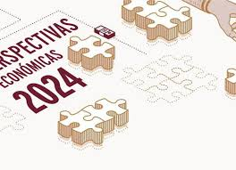

El 6 de agosto, fuerzas ucranianas realizaron una incursión en la región de Kursk, en Rusia, avanzando hasta 14 kilómetros dentro del territorio ruso. Este ataque forma parte del conflicto en curso entre Rusia y Ucrania. Las fuerzas rusas respondieron con artillería y ataques aéreos, pero se reportaron pérdidas significativas de ambos lados
A finales de julio, se llevó a cabo un intercambio de prisioneros entre Rusia y Estados Unidos, con la mediación de Turquía. Este intercambio involucró a 26 personas, incluidos espías rusos y ciudadanos detenidos en varios países, marcando un momento significativo en las relaciones diplomáticas entre ambas naciones

Según un sondeo de Reuters, se espera que el crecimiento económico de Rusia se desacelere a un 1.1% en 2024, en comparación con el 3.1% proyectado para este año. Esta desaceleración está vinculada a las altas tasas de interés, que el Banco de Rusia ha mantenido en niveles elevados para combatir la inflación persistente